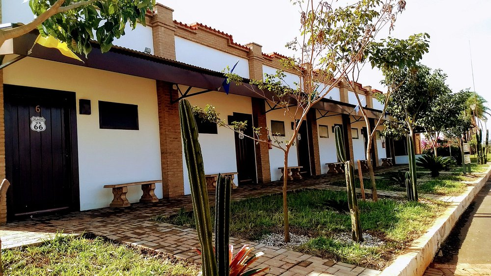

Com duas lanchonetes, dois postos de combustível e duas maravilhosas pousadas, o Rei do Suco está sempre perto de você.
O Rei do Suco é uma marca que faz parte do dia a dia da cidade de Olímpia, oferecendo qualidade e praticidade para seus clientes. Contamos com duas lanchonetes aconchegantes, ideais para quem busca um lanche rápido, sucos naturais ou um momento de pausa com a família e os amigos.
Além disso, temos dois postos de combustíveis estrategicamente localizados, garantindo atendimento ágil e produtos de confiança para quem está na estrada ou no dia a dia. Nosso compromisso é unir sabor, qualidade e conveniência em um só lugar.
Olímpia é conhecida como a capital nacional do turismo, atraindo visitantes de todo o Brasil para seus parques aquáticos e atrações culturais. Pensando nisso, o Rei do Suco oferece duas opções de hotéis/pousadas que unem conforto, boa localização e atendimento acolhedor. Seja para descansar após um dia no Thermas dos Laranjais ou curtir as belezas da região, nossos espaços garantem a estadia ideal para você e sua família.
Os Postos Rei do Suco, bandeira BR (Petrobras), oferecem combustíveis de qualidade e atendimento de confiança para quem está sempre em movimento. Com duas unidades em Olímpia, garantimos praticidade e segurança para motoristas da região e visitantes. Além do abastecimento, nossos clientes encontram conveniência e serviços que tornam cada parada mais completa.
Aqui tem nome. Aqui tem raça!
"Ambiente aconchegante e agradavel, restaurante tematico e com comida incrivel!"
- Marco Bertholdo
"Comida deliciosa, espero poder voltar mais vezes nesse lugar maravilhoso."
- Ana Bertholdo
Receba as principais noticiais e eventos do Rei do suco em seu e-mail!
Todos os direitos reservados | Desenvolvido por Marco Bertholdo